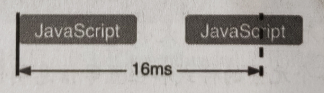
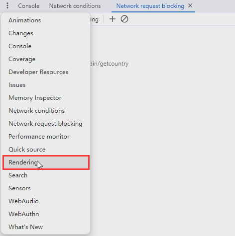
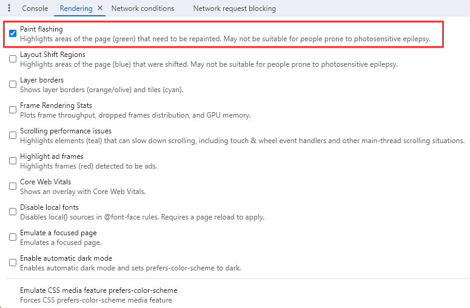
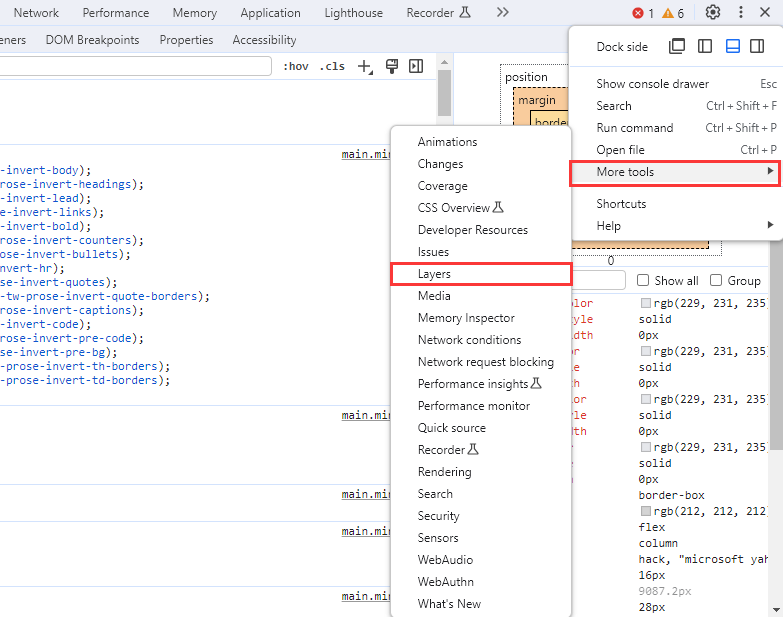

2024-06-08 13:58:49 · YinHao
许多原因都会触发浏览器进行渲染，例如用户交互、CSS 动画、以 JavaScript 修改 CSS 等，不过整体上可以将渲染分为 5 个阶段：
JavaScript -> Style Calculation -> Layout -> Paint -> Composite
JavaScript：修改 DOM、CSS 或使用 Animation API 等
Style Calculation(样式计算)：计算每个元素的最终样式
Layout(布局)：计算元素的位置，大小
Paint(绘制)：根据各个元素的样式和位置等信息制作出多个图层(Layers)
Composite(合成)：将图层合并后产生最终的画面
经过渲染后会产生一个画面，当浏览器将其显示于页面上时，用户才会看到新的一帧画面。
一般来说，浏览器的画面刷新频率为每秒 60 次（60FPS），因此浏览器需要再约 16ms 的时间内完成渲染才不会造成画面延迟。
制作动画除了用 JavaScript 直接修改 DOM、CSS 外，还有 Animation API、CSS Animations、CSS Transitions 等方式，但归根结底都是改变元素的样式，因此性能问题大致上可以归类为花过长时间或在错误的时机修改样式。
作为渲染的第一阶段，最适合修改样式的时机在每一帧的开头，如此才能保留最多时间给后续的阶段。
用 JavaScript 制作动画时，使用 requestAnimationFrame 能确保 JavaScript 在每一帧的开头执行，
function updateScreen(time) {
// 修改 DOM、CSS
}
requestAnimationFrame(updateScreen);
若使用 setTimeout、setInterval 来修改样式，则无法确保 JavaScript 在开头出执行，容易造成浏览器无法在 16ms 内完成渲染，或是在 16ms 内执行两次而造成性能损失，

原本应在 16ms 内完成渲染，但需等待 JavaScript 执行完毕而延后。
虽然每一帧的间隔是 16ms，但扣除其他阶段，最安全的运行时间是在 4ms 以内，如果动画计算量太过繁重，例如有大量排序、搜索等，可以把纯计算的部分移动 Worker 中，计算完再交由主线程来修改 DOM。
过于频繁地修改损失性能（16ms 内修改多次），与页面滚动有关的动画就是一个常见的例子，可以把需要用到的值暂存起来，且避免在一帧的时间内执行多次 requestAnimationFrame：
let lastScrollY = 0;
let scheduled = false;
function updateScreen() {
console.log(lastScrollY); // 最新的 window.scrollY
}
document.addEventListener("scroll", () => {
lastScrollY = window.scrollY; // 更新 scrollY
if (scheduled) return;
window.requestAnimationFrame(() => {
updateScreen();
scheduled = false; // Callback 执行完毕，可以注册下一次 Callback
});
scheduled = true;
});
每次改变 DOM 或 CSS 时，都需要重新计算元素的样式。而计算元素的样式时，首先要找出所有该元素匹配的 CSS 规则，根据 Chrome 官网所述，Chrome 在计算最终样式时，有一半时间都花在对比规则的选择器上，因此降低选择器的复杂度可以有效减少样式的计算时间。
例如：
<div class="container">
<div class="box">Box 1</div>
<div class="box">Box 2</div>
<div class="box">Box 3</div>
<div class="box">Box 4</div>
</div>
假设将第偶数个 Box 的背景设置为黑色后再恢复，可以使用 :nth-child(2n)，并通过容器上的 Class 来开关样式：
.container.toggled .box:nth-child(2n) {
background: #000;
}
const container = document.querySelector(".container");
container.classList.toggle("toggled");
另一种做法是建立一个简单的规则，再逐一对比 Box 开关样式：
.bg-black {
background: #000;
}
const container = document.querySelector(".container");
const boxes = container.querySelectorAll(".box");
for (let i = 0; i < boxes.length; i++) {
if (i % 2 === 0) {
boxes[i].classList.toggle("bg-black");
}
}
以这两种做法来说，前者浏览器在对选择器时，需要确定元素是不是偶数顺序的子元素，以及上层元素是否含有 container、toggled 这两个 Class，后者只需要确定元素有没有 bg-black 这个 Class，两种选择器的写法在性能上有不少差异，当页面中还有大量 Box 时，对渲染性能的影响就会变得非常显著。
在修改样式时，浏览器会检查哪些元素需要重新布局（Layout），且只要动到一个元素，底下所有子元素都需要重新布局。
通常在修改样式时，浏览器并不会马上进行布局，而是会在多次修改后以批次方式进行一次布局提升性能，但如果在修改元素样式后立即读取布局信息，则浏览器必须马上进行一次布局。
在一次渲染中，连续读写样式导致多次布局，这种情况被称为布局抖动，会大幅影响性能。
如下，读取元素的 offsetWidth 时，浏览器需要实时布局才能返回正确的元素宽度，如果马上修改样式再读取 offsetWidth，则会再次触发布局，
const boxes = document.querySelectorAl(".box");
for (let box of boxes) {
const width = box.offsetWidth; // 强制布局
box.style.width = `${width + 10}px`; // 修改 style
}
可以将读写分离来避免布局抖动：
const boxes = document.querySelectorAl(".box");
const widths = [];
for (let i = 0; i < boxes.length; i += 1) {
widths[i] = box.offsetWidth;
}
for (let i = 0; i < boxes.length; i += 1) {
box.style.width = `${widths[i] + 10}px`;
}
或者改变写法，用变量来存储元素的宽度
let boxWidth = 100; // 存储状态
boxWidth += 10;
const boxes = document.querySelectorAll(".box");
for (let box of boxes) {
box.style.width = `${boxWidth}px`;
}
以 FastDOM 提供的 API 来读写元素样式，会自动把 “读写读写读写” 的操作排序为 “读读读写写写” 来减少布局的次数，
只要修改的样式和排版有关都需要布局，包含修改 DOM、Resize 等，相对而言，如果只有改变颜色相关的样式，在渲染时浏览器会跳过布局阶段，直接进行绘制和合成，
Paint 阶段根据计算完成的样式、布局等信息来制作各个图层。
浏览器为了提升渲染效率，有时候会把元素独立为一个图层，如此一来，就能在图层内容不变时，直接使用上次的结果，借此略过绘制阶段。
除了让浏览器自动判断外，可以使用以下 CSS 来主动将元素独立于一个图层：
.will-change-property {
will-change: transform;
will-change: opacity;
}
.backface-visibility-hidden {
backface-visibility: hidden;
}
.transform-3d {
transform: translateZ(0);
transform: translate3d(0, 0, 0);
}
将元素独立为图层需要使用额外的内存来存储图层信息，因此添加图层前需要确认该元素会造成的性能问题，且添加图层后确实能提升性能。
为在元素上 ”will-change: transform“ 和 transform-3d 系列会创建 Containing-block，若子元素的 position 为 absolute，就会相对该元素进行排版，效果如同为元素加上 ”position: relative“。
图层越大，制作图层的复杂度就越高，所影响的渲染性能也就越多。
图层的大小取决于图层内元素的位置，也就是说，如果图层中有两个元素，分别位于整个页面的左上角和右下角，该图层就会与页面一样大。
而制作图层时，与模糊有关的样式通常需要更多性能，例如 box-shadow 的 blur-radius。
ESC 键以打开下方的 Drawer， 
若要更详细的观察图层的信息，可以使用 Layers 面板，
**More tools -> Layers **
面板左侧会显示当前页面存在哪些图层，单击列表或中间可视化区域内的图层，可以看到详细信息，包括图层的大小、产生的原因以及内存占用量
此外，可以通过移动、翻转中间可视化的图形来进一步检查图层之间的堆叠关系。

在 Performance 面板记录性能信息时，如果启用了 Enable advanced paint instrumentation 选项，那么单击 Frames 列表中任意一个 Frames 就会看到 Layers 分页，界面和 Layers 面板相同，可以用来查看特定一帧的图层信息，同时避免因大量动画而让 Layers 面板跑不动的问题。
除了 transform 和 opacity 属性之外，修改任何样式都会触发绘制阶段，相对而言，若只修改 transform 和 opacity 属性，在渲染时就能跳过布局、绘制阶段
到了 Composite 阶段，能够思考的手段就是尽可能减少图层的数量，
值得一提的是，Composite 阶段会在另一个线程中进行，不会占用主线程的资源，由此可以发现一个有趣的现象：即使主线程被占满，单击、输入等操作都没有反应，页面还是能够滚动，这是因为页面滚动是在 Composite 阶段进行的。